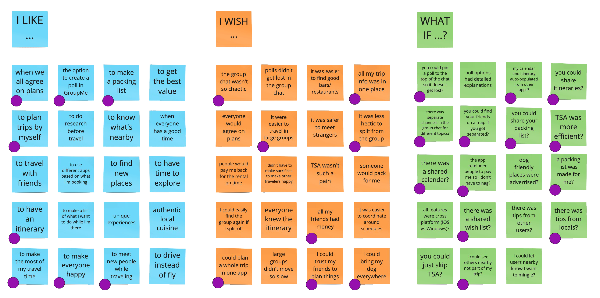
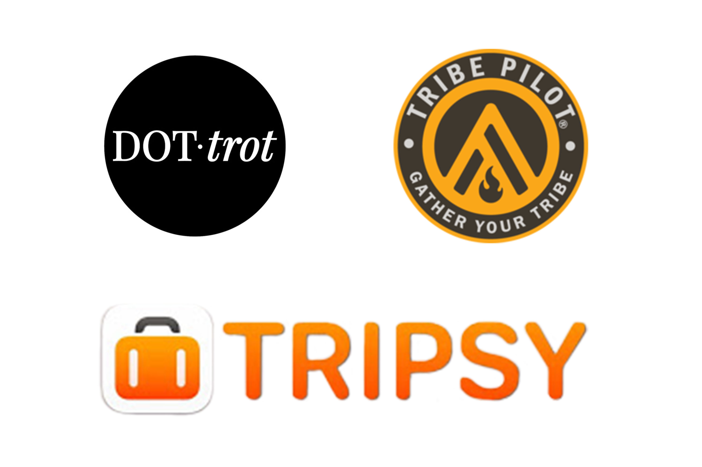
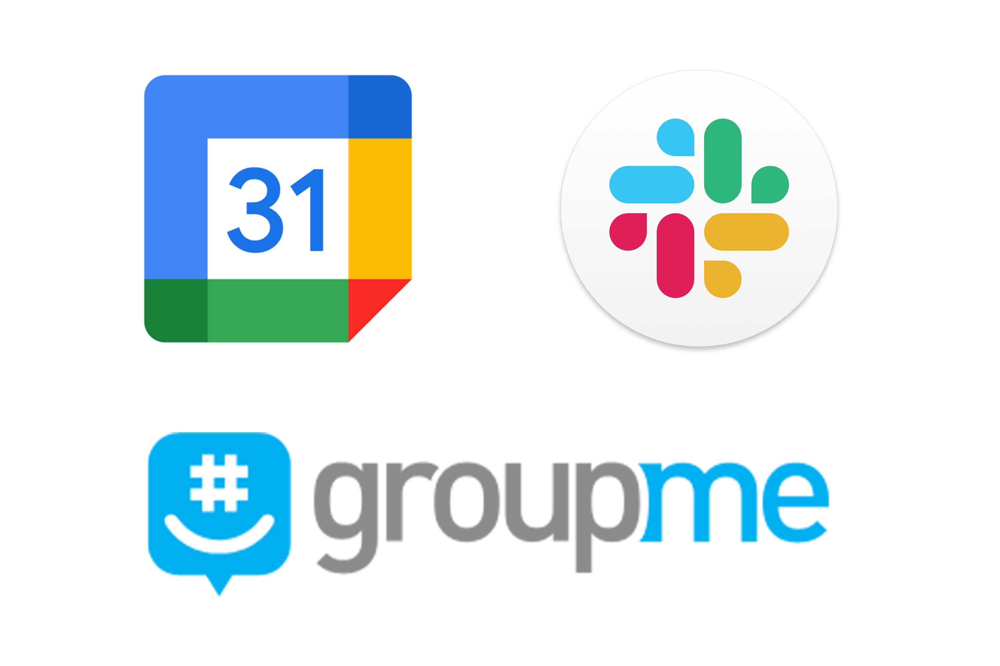

Squad

Project information
- Category: Mobile App
- Client: Imaginary Startup, "Squad"
- Project date: January, 2021
- Conducted as part of Georgia Tech UX/UI BootCamp
Introduction
For our first design challenge in Georgia Tech's UX/UI BootCamp, we were to imagine that we had just been hired as a product designer for a new travel startup. In this hypothetical scenario, the startup would launch its app once the global Pandemic ends. The startup's goal is to build a modern-day mobile app that helps people on their next trip. This case study was a solo project, and took place over five weeks.
Research
Proto-Persona
Before starting my user interview process, I created a proto-persona based on my assumptions and personal experiences. I anticipated that most users will be cautious traveling post-pandemic, and that cleanliness will remain at top of mind. I also anticipated users will prefer traveling in smaller groups, be concerned about cost, and enjoy a range of activities and destinations.
User Interviews
I conducted five interviews in hopes of discovering what needs of the post-pandemic traveler are not being met by current resources. My goals were to (1) understand the user and their travel habits, (2) discover pain points of the planning process, and (3) discover pain points experienced while traveling.
Each interview consists of 15 questions about the user’s travel habits and preferences. Interviews took place both virtually and in person and ranged from 20-40 minutes in length. All interviewees are known to love travel, but vary in age and income levels.
Analysis & Definition
User Analysis
Next, I organized my notes and key takeaways into an Affinity Map. I then synthesized the data from my five users into an empathy map focused on the recurring themes I discovered.
Some examples of key themes were:
- Cleanliness is very important!
- "I want the best BANG for my buck!"
- Consult the travel group chat for all plans
- Large variation in what different travelers want
- Difficult to please everyone in the travel group

User Persona
After analyzing all of my user research, I flushed out a more detailed User Persona.
Defining the Problem
Next, I defined a User Insight, Problem Statement, and Value Proposition.
The recurring pain point I decided to focus on revolves around organizing a trip as a group. Everyone tends to have different things they want to experience in their travels, and it can be difficult to compromise with your travel companions when making plans. Multiple text threads makes things confusing and frustrating, both while planning a trip and while traveling.
While there is always the option to split up to ensure everyone gets to do what they want, that can make it difficult to re-group thus you end up missing out on making group memories.
User Insight
Monica, the organizer, needs a better way to coordinate with her large travel group, share trip information, itineraries, and hold others accountable, because she does not want to sacrifice her enjoyment by putting the varying priorities and preferences of the group before her own.
Problem Statement
Several apps and group chats are used by large travel groups to plan and discuss their trip and itinerary. Through user interviews, we have discovered that because all necessary information is scattered, travel groups often become confused and frustrated when trying to coordinate before and during travels. How might we create a centralized discussion and resource hub travel groups can use to avoid arguments and easily coordinate their trip?
Value Proposition
Squad: The Ultimate Hub for Group Trips
Delete the group chat and plan your next trip with Squad! Group decisions are made easy with streamlined discussion threads and polling features. Stay organized, access crucial trip information at any time, and use the shared agenda to make the most of your travel experience together!
Feature Analysis
With so many aspects to travel planning and trip execution in mind, I then began prioritizing what features to include. In an effort to accomplish this, I conducted an I like, I wish, What if? exercise, created a feature prioritization matrix, and synthesized into a value proposition canvas.
Market Research
Competitor Analysis
I then did an in-depth competitor analysis. I looked at three direct competitors to see what other apps are doing to solve the same problems I have identified. Then I looked at three in-direct competitors that are extremely popular apps for very specific features that I wanted to include in Squad. I thoroughly explored each app, took screenshots, and analyzed what worked well and what did not work.
Direct Competitors
Indirect Competitors
Prototyping & Testing
Wireframes: Sketches

Med-Fi Clickable Prototype
User Flow
The user flow went through several iterations as wireframes evolved into clickable prototypes. Find the final version below.
Guerrilla User Testing
Objective: Discover any problems within the current flow of the app, and receive general impression feedback
Target Users: Ages 25+ who travel often in groups (x4 users)
Questions:
- Does the flow of the app make sense?
- Is the user successfully able to set up a trip?
- User likes/dislikes about using the app?
Tasks and scenarios:
- First Time User: Sign Up and Create New Trip
- Returning User: Log In and Create New Trip
Analysis
Conclusions
Needs:
- Build more pages
- "Submit" button added to pages with keyboard submissions
- Set permissions for who has ability to edit what about a trip
- Ability to enter info for multiple accommodations
- Toggle for GPS location sharing or Ghost modern-day
Should:
- Limit to how many people can be added to a trip
Wants/Dreams
- Left-handed mode (flip tabs on Trip Homepage)
- What's nearby? (Incorporate Google Maps or Yelp)
In-Class Peer Suggestions:
- Correct typos
- Guide users to know what icons mean
- Move "coaching" frames after "Sign Up" flow
- Update "swipe to continue" feature on splash screen more obvious
Final Prototype
Final Thoughts
Upon “completing” a high-fidelity wireframe prototype, it is clear to me this is just the beginning of developing a fully functioning app. There are tons of features listed below that I would like to develop further through more user testing and iterations.
Features for Further Development:
Squad Page
- Share Expenses
Trip Map Page
- Search what's nearby
- Navigation (to Squad member or event location)
Settings Menu
- General settings (permissions, notifications, etc.)
- Trip specific settings
- Left-handed mode (flip tabs on Trip Homepage)
Conversations page
- Sub-conversations page layout
- Direct messaging
My Calendar Page
- Layout development
My Profile Page
- Edit personal information
- Edit profile picture